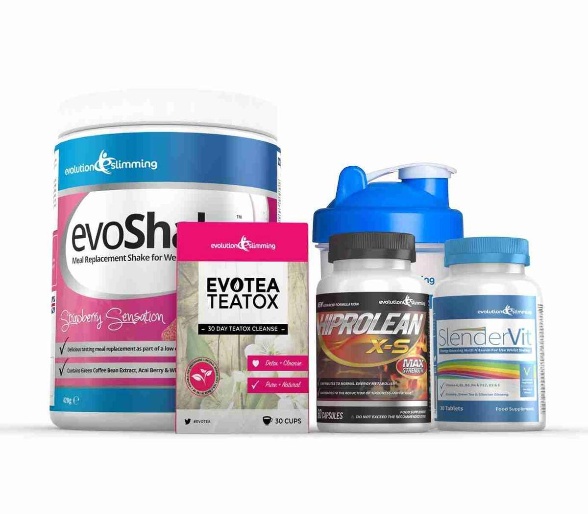
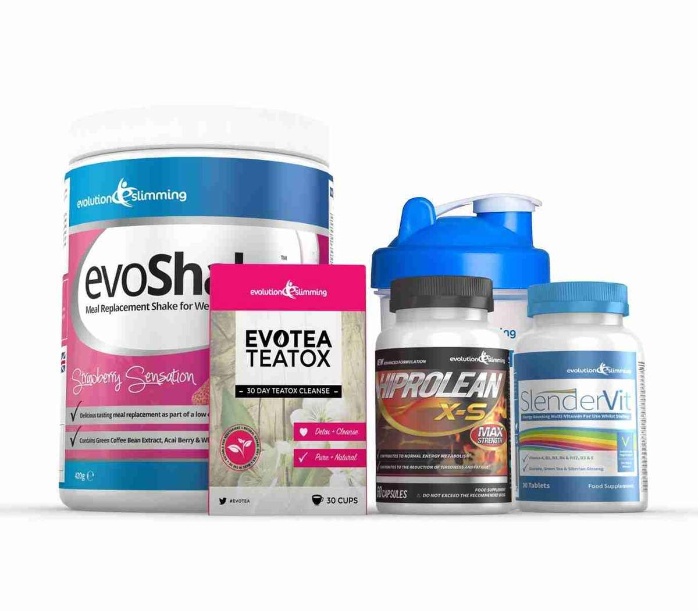

12 Popular Weight Loss Pills and Supplements Reviewed
2020.12.07 12:17

Subscribe
Nutrition
Evidence Based12 Popular Weight Loss Pills and Supplements Reviewed
Written by Kris Gunnars, BSc on January 21, 2017We include products we think are useful for our readers. If you buy through links on this page, we may earn a small commission. Here’s our process.
There are many different weight loss solutions out there.
This includes all sorts of pills, drugs and natural supplements.
These are claimed to help you lose weight, or at least make it easier to lose weight combined with other methods.
They tend to work via one or more of these mechanisms:
Reduce appetite , making you feel more full so that you eat fewer calories Reduce absorption of nutrients like fat, making you take in fewer calories Increase fat burning , making you burn more caloriesHere are the 12 most popular weight loss pills and supplements, reviewed by science.
1. Garcinia Cambogia Extract
Share on PinterestGarcinia cambogia became popular worldwide after being featured on the Dr. Oz show in 2012.
It is a small, green fruit, shaped like a pumpkin.
The skin of the fruit contains hydroxycitric acid (HCA). This is the active ingredient in garcinia cambogia extract, which is marketed as a diet pill.
How it works: Animal studies show that it can inhibit a fat-producing enzyme in the body and increase levels of serotonin, potentially helping to reduce cravings ( 1 , 2 ).
Effectiveness: One study with 130 people compared garcinia against a dummy pill. There was no difference in weight or body fat percentage between groups ( 3 ).
A 2011 review that looked at 12 studies on garcinia cambogia found that, on average, it caused weight loss of about 2 pounds (0.88 kg) over several weeks ( 4 ).
Side effects: There are no reports of serious side effects, but some reports of mild digestive problems.
Bottom Line:Even though garcinia cambogia may cause modest weight loss, the effects are so small that they probably won’t even be noticeable.
2. Hydroxycut
Hydroxycut has been around for more than a decade, and is currently one of the most popular weight loss supplements in the world.
There are several different types, but the most common one is simply called “Hydroxycut.”
How it works: It contains several ingredients that are claimed to help with weight loss, including caffeine and a few plant extracts.
Effectiveness: One study showed that it caused 21 lbs (9.5 kg) of weight loss over a 3 month period ( 5 ).
Side effects: If you are caffeine sensitive, you may experience anxiety, jitteriness, tremors, nausea, diarrhea and irritability.
Bottom Line:Unfortunately, there is only one study on this supplement and no data on long-term effectiveness. More research is needed.
3. Caffeine
Caffeine is the most commonly consumed psychoactive substance in the world ( 6 ).
It is found naturally in coffee , green tea and dark chocolate , and added to many processed foods and beverages.
Caffeine is a well known metabolism booster , and is often added to commercial weight loss supplements.
How it works: Short-term studies have shown that caffeine can boost metabolism by 3-11%, and increase fat burning by up to 29% ( 7 , 8 , 9 , 10 ).
Effectiveness: There are also some studies showing that caffeine can cause modest weight loss in humans ( 11 , 12 ).
Side effects: In some people, high amounts of caffeine can cause anxiety, insomnia, jitteriness, irritability, nausea, diarrhea and other symptoms. Caffeine is also addictive and can reduce the quality of your sleep.
There really is no need to take a supplement or a pill with caffeine in it. The best sources are quality coffee and green tea, which also have antioxidants and other health benefits.
Bottom Line:Caffeine can boost metabolism and enhance fat burning in the short term. However, a tolerance to the effects may develop quickly.
4. Orlistat (Alli)
Orlistat is a pharmaceutical drug, sold over-the-counter under the name Alli , and under prescription as Xenical.
How it works: This weight loss pill works by inhibiting the breakdown of fat in the gut, making you take in fewer calories from fat.
Effectiveness: According to a big review of 11 studies, orlistat can increase weight loss by 6 pounds (2.7 kg) compared to a dummy pill ( 13 ).
Other benefits: Orlistat has been shown to reduce blood pressure slightly, and reduced the risk of developing type 2 diabetes by 37% in one study ( 14 , 15 ).
Side effects: This drug has many digestive side effects , including loose, oily stools, flatulence, frequent bowel movements that are hard to control, and others. It may also contribute to deficiency in fat-soluble vitamins, such as vitamins A, D, E and K.
It is usually recommended to follow a low-fat diet while taking orlistat, in order to minimize side effects.
Interestingly, a low carb diet (without drugs) has been shown to be as effective as both orlistat and a low-fat diet combined ( 16 ).
Bottom Line:Orlistat, also known as Alli or Xenical, can reduce the amount of fat you absorb from the diet and help you lose weight. It has many side effects, some of which are highly unpleasant.
5. Raspberry Ketones
Raspberry ketone is a substance found in raspberries, which is responsible for their distinct smell.
A synthetic version of raspberry ketones is sold as a weight loss supplement.
How it works: In isolated fat cells from rats, raspberry ketones increase breakdown of fat and increase levels of a hormone called adiponectin, believed to be related to weight loss ( 17 ).
Effectiveness: There is not a single study on raspberry ketones in humans, but one rat study using massive doses showed that they reduced weight gain ( 18 ).
Side effects: They may cause your burps to smell like raspberries.
Bottom Line:There is no evidence that raspberry ketones cause weight loss in humans, and the rat studies showing it to work used massive doses.
6. Green Coffee Bean Extract
Green coffee beans are simply normal coffee beans that haven’t been roasted.
They contain two substances believed to help with weight loss, caffeine and chlorogenic acid.
How it works: Caffeine can increase fat burning, and chlorogenic acid can slow the breakdown of carbohydrates in the gut.
Effectiveness: Several human studies have shown that green coffee bean extract can help people lose weight ( 19 , 20 ).
A review of 3 studies found that the supplement made people lose 5.4 more pounds (2.5 kg) than placebo, a dummy pill ( 21 ).
Other benefits: Green coffee bean extract may help lower blood sugar levels, and reduce blood pressure. It is also high in antioxidants ( 22 , 23 , 24 , 25 ).
Side effects: It can cause the same side effects as caffeine. The chlorogenic acid in it may also cause diarrhea, and some people may be allergic to green coffee beans ( 26 ).
Bottom Line:Green coffee bean extract may cause modest weight loss, but keep in mind that many of the studies were industry sponsored.
7. Glucomannan
Glucomannan is a type of fiber found in the roots of the elephant yam, also called konjac.
How it works: Glucomannan absorbs water and becomes gel-like. It “sits” in your gut and promotes a feeling of fullness, helping you eat fewer calories ( 27 ).
Effectiveness: Three human studies showed that glucomannan, combined with a healthy diet, can help people lose 8-10 pounds (3.6-4.5 kg) of weight in 5 weeks ( 28 ).
Other benefits: Glucomannan is a fiber that can feed the friendly bacteria in the intestine. It can also lower blood sugar, blood cholesterol and triglycerides, and is very effective against constipation ( 29 , 30 , 31 ).
Side effects: It can cause bloating, flatulence and soft stools, and can interfere with some oral medications if taken at the same time.
It is important to take glucomannan about a half an hour before meals, with a glass of water. If you would like to try it, Amazon has a good selection available.
You can find an objective review of glucomannan in this article .
Bottom Line: Studies consistently show that the fiber glucomannan, when combined with a healthy diet, can help people lose weight. It also leads to improvements in various health markers.8. Meratrim
Meratrim is a relative newcomer on the diet pill market.
It is a combination of two plant extracts that may change the metabolism of fat cells.
How it works: It is claimed to make it harder for fat cells to multiply, decrease the amount of fat that they pick up from the bloodstream, and help them burn stored fat.
Effectiveness: So far, only one study has been done on Meratrim. A total of 100 obese people were placed on a strict 2000 calorie diet, with either Meratrim or a dummy pill ( 32 ).
After 8 weeks, the Meratrim group had lost 11 pounds (5.2 kg) of weight and 4.7 inches (11.9 cm) off their waistlines. They also had improved quality of life and reduced blood sugar, cholesterol and triglycerides.
Side effects: No side effects have been reported.
For a detailed review of Meratrim, read this article .
Bottom Line:One study showed that Meratrim caused weight loss and had a number of other health benefits. However, the study was industry sponsored and more research is needed.
9. Green Tea Extract
Green tea extract is a popular ingredient in many weight loss supplements.
This is because numerous studies have shown the main antioxidant in it, EGCG, to aid fat burning.
How it works: Green tea extract is believed to increase the activity of norepinephrine, a hormone that helps you burn fat ( 33 ).
Effectiveness: Many human studies have shown that green tea extract can increase fat burning and cause fat loss, especially in the belly area ( 34 , 35 , 36 , 37 ).
Side effects: Green tea extract is generally well tolerated. It does contain some caffeine, and may cause symptoms in people who are caffeine sensitive.
Additionally, all of the health benefits of drinking green tea should apply to green tea extract as well.
Bottom Line: Green tea and green tea extract can increase fat burning slightly, and may help you lose belly fat.10. Conjugated Linoleic Acid (CLA)
Conjugated linoleic acid , or CLA, has been a popular fat loss supplement for years.
It is one of the “healthier” trans fats, and is found naturally in some fatty animal foods like cheese and butter .
How it works: CLA may reduce appetite, boost metabolism and stimulate the breakdown of body fat ( 38 , 39 ).
Effectiveness: In a major review of 18 different studies, CLA caused weight loss of about 0.2 pounds (0.1 kg) per week, for up to 6 months ( 40 ).
According to another review study from 2012, CLA can make you lose about 3 lbs (1.3 kg) of weight, compared to a dummy pill ( 41 ).
Side effects: CLA can cause various digestive side effects, and may have harmful effects over the long term, potentially contributing to fatty liver, insulin resistance and increased inflammation.
Bottom Line:CLA is an effective weight loss supplement, but it may have harmful effects over the long term. The small amount of weight loss is not worth the risk.
11. Forskolin
Forskolin is an extract from a plant in the mint family, claimed to be effective for losing weight.
How it works: It is believed to raise levels of a compound inside cells called cAMP, which may stimulate fat burning ( 42 ).
Effectiveness: One study in 30 overweight and obese men showed that forskolin reduced body fat and increased muscle mass, while having no effect on body weight. Another study in 23 overweight women found no effects ( 43 , 44 ).
Side effects: There is very limited data on the safety of this supplement, or the risk of side effects.
Bottom Line:The two small studies on forskolin have shown conflicting results. It is best to avoid this supplement until more research is done.
12. Bitter Orange / Synephrine
A type of orange called bitter orange contains the compound synephrine .
Synephrine is related to ephedrine, which used to be a popular ingredient in various weight loss pill formulations.
However, ephedrine has since been banned as a weight loss ingredient by the FDA because of serious side effects.
How it works: Synephrine shares similar mechanisms with ephedrine, but is less potent. It can reduce appetite and significantly increase fat burning ( 45 ).
Effectiveness: Very few studies have been done on synephrine, but ephedrine has been shown to cause significant short-term weight loss in many studies ( 46 ).
Side effects: Like ephedrine, synephrine may have serious side effects related to the heart. It may also be addictive.
Bottom Line:Synephrine is a fairly potent stimulant, and probably effective for weight loss in the short term. However, the side effects can be serious, so this should only be used with extreme caution.
Prescription Medication
Additionally, there are many prescription weight loss pills that have been shown to be effective.
The most common ones are Contrave , Phentermine, and Qsymia .
According to a recent 2014 review study, even prescription weight loss pills don’t work as well as you would hope.
On average, they may help you lose up to 3-9% of body weight compared to a dummy pill ( 47 ).
Keep in mind that this is only when combined with a healthy weight loss diet . They are ineffective on their own, and hardly a solution to obesity.
Not to mention their many side effects.
WITHDRAWAL OF BELVIQ In February 2020, the Food and Drug Administration (FDA) requested that the weight loss drug lorcaserin (Belviq) be removed from the U.S. market. This is due to an increased number of cancer cases in people who took Belviq compared to placebo. If you’re prescribed or taking Belviq, stop taking the drug and talk with your healthcare provider about alternative weight management strategies.Learn more about the withdrawal here and here .
Take Home Message
Out of the 12, these are the clear winners, with the strongest evidence to back them up:
Weight loss: Glucomannan, CLA and Orlistat (Alli) Increased fat burning: Caffeine and green tea extractHowever, I have to advise against Orlistat due to the unpleasant side effects, and against CLA due to the harmful effects on metabolic health.
That leaves us with glucomannan, green tea extract and caffeine.
These supplements can be useful, but the effects are modest at best.
Unfortunately, NO supplement or pill really works that well for weight loss.
They may give your metabolism a bit of a nudge and help you lose a few pounds, but that’s where it ends, unfortunately.
Cutting carbs and eating more protein are still the best ways to lose weight, and work better than all the diet pills combined.
Written by Kris Gunnars, BSc on January 21, 2017related stories
Sonoma Diet Review: Does It Work for Weight Loss? Shibboleth Diet Review: Does It Work for Weight Loss? Boiled Egg Diet Review: Does It Work for Weight Loss? Upper Pubic Area Weight Loss and Medical Treatment Are Peanuts Good for Weight Loss?Read this next
Sonoma Diet Review: Does It Work for Weight Loss? Written by Ansley Hill, RD, LDThe Sonoma Diet is a modern twist on the traditional Mediterranean diet, but you may want to know whether it works for weight loss. This article tells…
READ MORE Shibboleth Diet Review: Does It Work for Weight Loss? Written by Gavin Van De Walle, MS, RDThe Shibboleth diet program is based on its founder's personal experience with weight loss. This article reviews whether the Shibboleth diet can aid…
READ MORE Boiled Egg Diet Review: Does It Work for Weight Loss? Written by Rachael Link, MS, RDThe Boiled Egg Diet is a popular fad diet that promises fast weight loss. This article reviews the Boiled Egg Diet and whether it's effective.
READ MORE Upper Pubic Area Weight Loss and Medical Treatment Medically reviewed by Daniel Bubnis, M.S., NASM-CPT, NASE Level II-CSSIt can be frustrating trying to get rid of upper pubic fat. But patience, exercise, and your diet can make it possible.
READ MORE Are Peanuts Good for Weight Loss? Written by Katey Davidson, MScFN, RDPeanuts are incredibly popular and nutritious, but you may wonder whether they're weight loss friendly. This article reviews whether peanuts are good…
READ MORE Beyond Diet Review: Does It Work for Weight Loss? Written by Rachael Link, MS, RDAlthough the Beyond Diet prioritizes healthy foods like fruits and vegetables, it also eliminates several food groups and may be challenging to…
READ MORE Omni Diet Review: Does It Work for Weight Loss? Written by Katey Davidson, MScFN, RDThe Omni Diet was developed by Tana Amen and focuses on consuming whole, unprocessed foods. This article reviews the Omni Diet, including its benefits…
READ MORE Do Digestive Enzymes Promote Weight Loss? Written by Rachael Link, MS, RDDigestive enzymes are often used to support healthy digestion, but you may wonder whether they can help you shed more weight. This article reviews…
READ MORE The Biggest Loser Diet: Does It Work for Weight Loss? Written by Anne Danahy, MS, RDNThe Biggest Loser Diet, which cuts calories and emphasizes exercise, is based on the TV show of the same name. This article tells you whether the…
READ MORE Refeed Day: What It Is and How to Do It Written by Katey Davidson, MScFN, RDA refeed day is a planned day on which you increase your calorie intake to give your body a temporary respite from calorie restriction. This article…
READ MORE About Us Newsletters Health Topics Find an Online Doctor Contact Us Advertising Policy Do Not Sell My Info Privacy Settings © 2005-2020 Healthline Media a Red Ventures Company. All rights reserved. Our website services, content, and products are for informational purposes only. Healthline Media does not provide medical advice, diagnosis, or treatment. See additional information . © 2005-2020 Healthline Media a Red Ventures Company. All rights reserved. Our website services, content, and products are for informational purposes only. Healthline Media does not provide medical advice, diagnosis, or treatment. See additional information . About Careers Advertise with usOUR BRANDS
Healthline Medical News Today Greatist PsychCentral- Weight Loss? Easy! The Best Supplements to Keep Fit ...
- 12 Popular Weight Loss Pills and Supplements Reviewed
- 13 best Patanjali Products for weight loss (With Price)
- Weight Loss: Buy Weight Loss Products Online At Best ...
- Amazon.com: Weight Loss: Health & Household: Supplements ...
- Shark Tank Weight Loss Products 2020: What's Real and What ...
- Top 10 Weight Loss Products On Amazon (Of ALL TIME ...
- Dietary supplements for weight loss - Mayo Clinic
- 11 Supplements and Herbs for Weight Loss Explained - WebMD
- 10 BEST Weight-Loss Products That Actually Work | TDE
- Weight Loss? Easy! The Best Supplements to Keep Fit ...
A safe and effective way to lose weight is always going to be in demand. This is a guide to the various weight loss products that have been featured on Shark Tank. As always, our goal is for you to make informed and safe choices when buying health products.
- 12 Popular Weight Loss Pills and Supplements Reviewed
TruVision Health Weight Loss: Order TruVision weight loss combo. TruVision Health trufix and trucontrol sample. Buy TruVision. Lose avg. 4-7 lbs in the 1st week. New Truvy products.
- 13 best Patanjali Products for weight loss (With Price)
2019 Best Weight Loss Products. Though I’m still on my weight loss journey and have about another 30 pounds to lose, I am 30 pounds below my max weight of nearly 200 pounds.No, that doesn’t make me a weight loss expert, but I do feel like I know at least a little about what is truly helpful and what is not.Especially for those of us who have problems committing long-term to workout plans ...
- Weight Loss: Buy Weight Loss Products Online At Best ...
Buy Weight Loss Supplements online at Chemist Warehouse and enjoy huge discounts across the entire range. Shop products online or in store today. Exclusive Offers And Big Savings Delivered to your inbox! sign up. Required field. Invalid email address. Please try again. There was an issue. Please reload the page try again.
- Amazon.com: Weight Loss: Health & Household: Supplements ...
The average weight loss in the supplement group was 4.2 pounds (1.9 kilograms). The average weight loss in the placebo group was 0.9 pounds (0.4 kilograms). While these results are intriguing, the fact that the trial was small and lasted only eight weeks means the results can't be reliably generalized to real-world situations.
- Shark Tank Weight Loss Products 2020: What's Real and What ...
The low levels of fat and carbohydrates in the best protein powders makes them one of the best weight loss products that actually work. Dog. Me and my girlfriend recently got a dog. What a great way to get your ass off the couch! Since I care a lot about our dog I feel that I have to get out on long walks, for the dog’s sake.
- Top 10 Weight Loss Products On Amazon (Of ALL TIME ...
There are many different weight loss solutions out there. This includes all sorts of pills, drugs and natural supplements. These are claimed to help you lose weight, or at least make it easier to ...
- Dietary supplements for weight loss - Mayo Clinic
The Best Trader Joe's Products For Weight Loss We know the popular supermarket chain avoids marketing their products, and that may be why countless hidden health gems secretly lurk on TJ's shelves.
- 11 Supplements and Herbs for Weight Loss Explained - WebMD
Since weight loss is a function of burning more calories than your body absorbs, a weight loss pill can tackle one or both of these potential avenues to generate weight loss. Weight loss pills are great for people on a diet, as they are a natural compliment to an exercise and diet-focused weight loss program .
- 10 BEST Weight-Loss Products That Actually Work | TDE
Shop Weight Management. Should you take a weight loss supplement every day? The best way to use weight loss supplements is to take them every day as directed for a short period of time (2-6 weeks). You should only need the extra support of these products when you are looking for that final boost for your fat loss diet.
A safe and effective way to lose weight is always going to be in demand. This is a guide to the various weight loss products that have been featured on Shark Tank. As always, our goal is for you to make informed and safe choices when buying health products.
TruVision Health Weight Loss: Order TruVision weight loss combo. TruVision Health trufix and trucontrol sample. Buy TruVision. Lose avg. 4-7 lbs in the 1st week. New Truvy products.
2019 Best Weight Loss Products. Though I’m still on my weight loss journey and have about another 30 pounds to lose, I am 30 pounds below my max weight of nearly 200 pounds.No, that doesn’t make me a weight loss expert, but I do feel like I know at least a little about what is truly helpful and what is not.Especially for those of us who have problems committing long-term to workout plans ...
Buy Weight Loss Supplements online at Chemist Warehouse and enjoy huge discounts across the entire range. Shop products online or in store today. Exclusive Offers And Big Savings Delivered to your inbox! sign up. Required field. Invalid email address. Please try again. There was an issue. Please reload the page try again.
The average weight loss in the supplement group was 4.2 pounds (1.9 kilograms). The average weight loss in the placebo group was 0.9 pounds (0.4 kilograms). While these results are intriguing, the fact that the trial was small and lasted only eight weeks means the results can't be reliably generalized to real-world situations.
The low levels of fat and carbohydrates in the best protein powders makes them one of the best weight loss products that actually work. Dog. Me and my girlfriend recently got a dog. What a great way to get your ass off the couch! Since I care a lot about our dog I feel that I have to get out on long walks, for the dog’s sake.
There are many different weight loss solutions out there. This includes all sorts of pills, drugs and natural supplements. These are claimed to help you lose weight, or at least make it easier to ...
The Best Trader Joe's Products For Weight Loss We know the popular supermarket chain avoids marketing their products, and that may be why countless hidden health gems secretly lurk on TJ's shelves.
Since weight loss is a function of burning more calories than your body absorbs, a weight loss pill can tackle one or both of these potential avenues to generate weight loss. Weight loss pills are great for people on a diet, as they are a natural compliment to an exercise and diet-focused weight loss program .
Shop Weight Management. Should you take a weight loss supplement every day? The best way to use weight loss supplements is to take them every day as directed for a short period of time (2-6 weeks). You should only need the extra support of these products when you are looking for that final boost for your fat loss diet.

 
